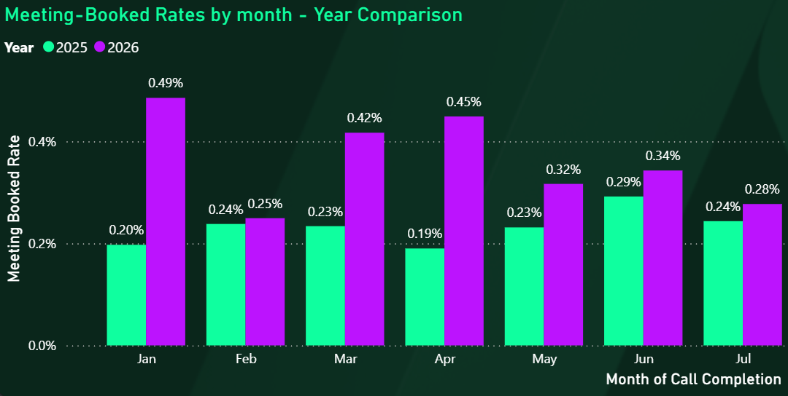

Date: 1/1/26

Sales teams operating at scale face a critical challenge: with hundreds of thousands of potential leads available monthly, they must prioritize which leads to pursue. Traditional lead qualification methods are manual and inconsistent, resulting in significant time waste on low-quality leads and missed opportunities on high-potential prospects.
The goal was to build an automated, data-driven system that could intelligently grade incoming leads in real-time, enabling sales representatives to focus their limited calling capacity on the highest-quality opportunities.
I developed a two-stage machine learning pipeline that predicts lead quality through sequential probability estimates:
A final composite scoring formula combines both model outputs with optimized weights, producing a single lead quality score that's synced to Salesforce for real-time access by the sales team.
Feature Engineering (230 Features): Extracted signal from noisy, unstructured data fields including job titles, education backgrounds, and organizational attributes from ZoomInfo. Key techniques included:
Model & Optimization: Built XGBoost models with strategic calibration to optimize for precision over recall. This design choice recognizes that sales teams are capacity-constrained—it's better to identify fewer high-confidence leads than to flood teams with marginal prospects.
Hyperparameter Tuning: Executed 3 rounds of grid search, progressively narrowing the search space across key parameters: column_sample_by_tree, learning_rate, max_depth, n_estimators, and subsample_size.
Production Deployment: Scheduled Azure ML Studio job running nightly that processes incoming leads through the full pipeline (data processing → feature engineering → scoring) and exports results directly to Salesforce. Built-in monitoring tracks model performance metrics with automated alerts if precision, recall, or F1 degrade by more than 5%.
The model delivered measurable improvements in sales team productivity and lead conversion:
This project reinforced several critical ML practices:
This was a solo project executed over 4 months (at ~50% allocation alongside other responsibilities). I owned every aspect: problem scoping, data exploration, feature engineering, model development, hyperparameter optimization, production deployment, and ongoing monitoring. This end-to-end ownership demonstrates the ability to take a business problem from definition through successful production deployment.